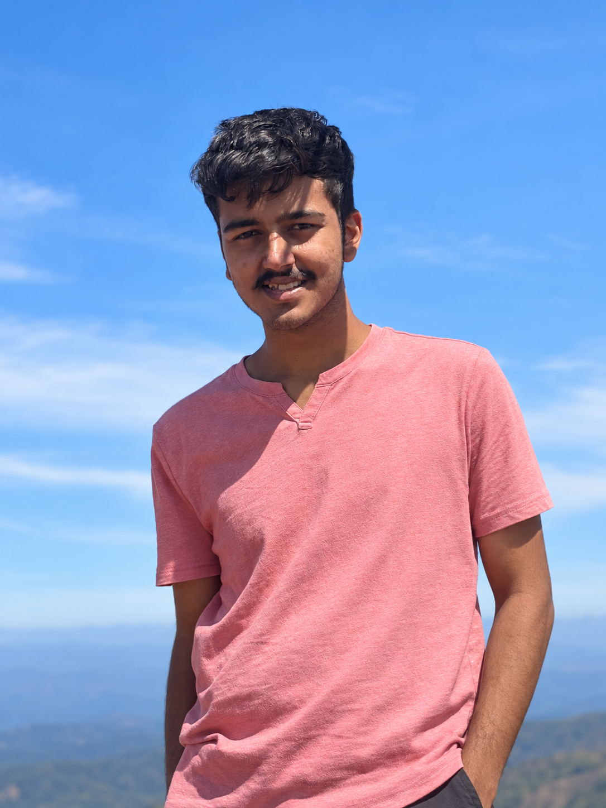

I'm a second year master's student(graduating May 2027) at Courant(NYU), interning at Systems Lab of NYU Courant advised by Prof. Jinyang Li, where I am spending most of my time working in the niche of gaussian splatting and ray tracing systems.
Particularly, I have worked on speeding up training of gaussian ray tracing systems(More details: FastGRT). Previously, I completed my undergraduate studies in CS at the National Institute of Technology Karnataka, Surathkal and have worked at Oracle as a Server Technology Intern.
I'm currently exploring ideas around physics embodied gaussians and generative 3D scenes. I'm broadly interested in working at the intersection of ML and systems.
Interests: 3D Reconstruction · Systems for ML · Distributed Systems